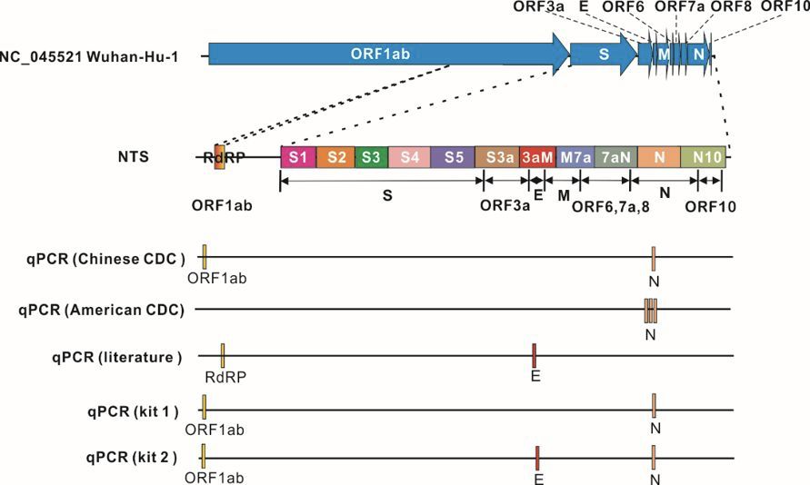

广东14%出院患者复检阳性，专家：可能仍具传染性
原文链接 备份链接 出院并不等于彻底痊愈 2月27日，已经出院19天的徐州居民王先生核酸检测呈阳性，被再次收入定点医院医学观察。 王先生在2月9日出院，经过14天隔离点观察后回家。回家后三天，王先生在新闻上看到部分康复者复检呈阳性，主 …

3 月 4 日，武汉市多家方舱医院收到紧急通知，暂停办理病人出院，对于出院的新冠患者施行更加严格的检测标准和审核流程，第二天就要正式开始落实。此前，有的方舱医院每天有 30、40 名患者出院。
据澎湃、界面等多方报道，此举是为避免更多 “复发”“返阳” 现象。近期，符合新冠肺炎出院标准或者已出院的患者在复检时又呈阳性的病例频繁出现。
早在 2 月 24 日，武汉大学人民医院呼吸与危重症医学科副主任医师、副教授张旃就发出警示，在临床检疫过程中，研究人员将符合国家卫健委出院标准的患者 18 人延迟出院，继续复查咽拭子核酸时发现 13 名患者在第三次检测中出现阳性结果。2 月 27 日，武汉大学中南医院放射科和检验科的一份临床报告也显示，4 例符合新冠肺炎医院出院或停止检疫标准的患者，在 5～13 天后 RT-PCR 检测又呈阳性。
类似情况不仅在国内出现，国外亦有案例。一名日本妇女于 1 月下旬被确诊患有 COVID-19，在治疗后病情缓解且核酸检测呈阴性后便出院了，三周后，她因喉咙痛和胸闷等病状重返医院检查，测试结果为阳性；韩国中央防疫对策本部发布的病例则显示，一位韩国女性在 2 月初被确诊为新冠肺炎，经过针对性的医疗和护理，于 2 月 22 日治愈出院，但仅隔了 5 天，她却再次出现了新冠肺炎的相关症状并略有加重，2 月 29 日再次入院治疗。
对此，武汉大学人民医院教授、检验科主任李艳对 DeepTech 说，类似出院时检测阴性，复检又变阳性的案例，除了可能是采样、检测不到位不够全面之外，当下也存在诸多检疫方法学局限性，而且，个别人体的免疫力、抗体强弱存在差异，不排除会有二次交叉感染导致复检出阳性的可能。
在新冠疫情攻坚期，我们迫切希望快速提升治愈出院患者的比例，尽快消化掉基数较大的确诊病人数量，但确保出院患者是真的康复了，不会再造成病情复发或新发感染更为重要，这都对一线新冠患者出院检疫评估提出了新的挑战。

图｜身穿防护服的医护人员与患者家属交谈（来源：路透社）
相关研究登上权威医学期刊

对于本已判定为痊愈、在复检时又呈阳性的病例，也引起医学权威期刊的关注。
武汉大学中南医院放射科和检验科的研究人员于 2 月 27 日发表在美国医学会杂志 JAMA network 上的临床报告显示，2020 年 1 月 1 日至 2020 年 2 月 15 日，武汉大学中南医院收治了 1 名住院患者和 3 名在家接受 COVID-19 检疫的患者，4 人均为医务人员，通过用实时逆转录 - 聚合酶链反应（RT-PCR）检测 COVID-19 核酸，以确认他们是否能重返工作岗位。
测试方法是对患者喉部拭子进行 RT-PCR 检测，均使用由中国疾病预防控制中心推荐的 RT-PCR 检测试剂盒（BioGerm）。检测结果显示这 4 名医务人员 RT-PCR 均呈阳性，CT 影像表现为磨玻璃样混浊或混合磨玻璃样混浊，病情从轻到中度不等。
随后他们接受了抗病毒治疗（每 12 小时口服 75 毫克奥司他韦），之后，4 例患者均连续 2 次 RT-PCR 检测呈阴性，从症状出现到恢复的时间为 12～32 天。
随后，他们的状况符合了国家卫健委发布的《新型冠状病毒肺炎诊疗方案（试行第六版）》中，关于解除隔离和出院的四条标准：1、体温恢复正常 3 天以上；2. 呼吸道症状明显好转；3. 肺部影像学显示急性渗出性病变明显吸收好转；4. 连续两次呼吸道标本核酸检测阴性（采样时间至少间隔 1 天）。
在出院或停止检疫后，这 4 名医务人员被要求在家继续检疫 5 天。
然而，令人不安的情况出现了。5～13 天后重复 RT-PCR 检测时，结果均为阳性，在接下来的 4-5 天内又进行了 3 次重复的 RT-PCR 检测，仍为阳性，使用不同制造商的试剂盒进行额外的 RT-PCR 检测，结果依然是阳性。
该报告的作者提示，可能需要重新评估出院或停止检疫的现行标准。
愈后短期复发？专家称几乎不可能
为什么会出现这类情况？难道说新冠肺炎患者治愈后还会复发？
李艳认为概率还是有的。她告诉 DeepTech，这跟个人的免疫力和抗体强度有关，如果抗体峰值本身不够且又恰巧与携带病毒的病人在一起，那再次被病毒入侵感染的情况就可能发生。
但香港大学生物医学学院病毒学专家金冬雁教授的看法不同，他对 DeepTech 表示，治愈患者短期内二次患病几乎不可能。
过往对 SARS-CoV 的研究表明，中和抗体在两年内仍很高，MERS-CoV 抗体也有 9 个月。而且即使抗体已经很低，再次遇到抗原时免疫细胞有记忆，抗体和保护性细胞免疫（例如细胞毒性 T 细胞）还是会大量产生，保护机体免受感染，这也是疫苗（主动免疫）以及血清治疗（被动免疫）的基础，对所有病原都一样。
区分是否复发，测定抗体就可以，将来有抗原测定试剂也可以辅助诊断，将核酸检测定量化及动态化做好，也能够说明一些问题，但如果这些试验都没有做，说治愈后复发那就是空口无凭的猜想了。
明尼苏达大学的传染病医生和流行病学家苏珊 · 克莱恩（Susan Kline）也认为，理论上来讲没有足够的时间再次感染。针对外来病毒，人们在感染、治愈后往往会形成免疫力，虽说免疫力不会永远持续下去，但人体产生的抗体可以防止随后短期内的接触感染，然后随着时间的推移，免疫反应减弱。不过这个过程至少也需要超过三周的时间。
“时间间隔太短了。”克莱恩说。“整个疫情只持续了两个月。人们在这段时间内治愈又重新受到感染的可能性非常小。”

图｜医护人员与出院的新冠肺炎痊愈患者作别（来源：网络）
匹兹堡大学的国际健康专家唐纳德 · 伯克（Donald Burke）在接受《连线》采访时表示，区分复发和再感染的唯一方法是检测完整的病毒序列，在这种情况下，可以查看是否有第二个冠状病毒株在第一个病毒株被清除后又入侵了人体。
当下用于诊断新冠肺炎检测的多是 RT-PCR 的方法，这种方法靠提取病毒的一些基因代码进行识别，它被设计成只抓取新冠状病毒特有的片段而非全部，由于某种特殊的荧光染料反应，病毒的数量越多，遗传物质发光越亮，以此表明病毒的存在。
理论上，如果医生在每一次确诊时都对患者的鼻子或口腔拭子中的病毒进行了完全测序，他们就可以使用基因组读取软件对每一个基因字母进行比较，确定患者是否有相同的冠状病毒株或新的冠状病毒株。
“没有这些数据，就无法确定。“伯克说，因为任何数据如果表明人们在治愈后短期内还能再次被感染新冠病毒，都可能对疫情的公共卫生响应产生巨大的影响。
可能是原始感染的延续
那么，国内外出现的多起痊愈患者复检呈阳性，背后原因究竟是什么？
“我怀疑这实际上是原始感染的延续。”苏珊 · 克莱恩表示，新冠病毒在某些人体内的停留时间比我们预期的更长。
在克莱恩看来，出院检测不够敏感，可能导致无法发现病毒的踪迹。目前用于诊断新冠肺炎的 RT-PCR 检测需要大量的遗传物质才能正常工作。如果冠状病毒正在积极地复制，那么会有大量的 RNA 供检测，但如果病毒载量下降，测试可能会产生假阴性。
此外，还有更多可能，比如因为病人的免疫系统产生了强烈的反应，短期集中的治疗减缓了冠状病毒的自我复制，还有可能是样本很糟糕，因为拭子一开始并没有沾到多少含病毒的体液。
金冬雁提示，我们需要关注的问题是，病人是否接受过激素治疗，以及是否治疗不当，试用了哪些免疫抑制作用的中西药物，这些情况有可能导致了病程延长及病毒清除的过程减缓。
也就是说，专家们倾向于认为这些复检再次呈阳性的痊愈患者，之前并没有痊愈，而是在出院检疫时出现了问题，没有检出患者携带的病毒，给出了 “假阴性” 结果。
早在疫情暴发初期确诊新冠病患时，“假阴性”就是一个大困扰，如今，在患者出院时又不可避免再次碰到此类问题。
检测次数少肯定是一个重要原因。如武汉大学人民医院呼吸与危重症医学科副主任医师、副教授张旃提到的情况，已符合国家出院标准的 18 名患者，在共计 5 次核酸检测中，其中 13 名第三次检测结果仍为阳性，如果任由患者出院回家，那么复检阳性的概率是很大的，因此张旃提议，出院标准上调为至少连续 3 次呼吸道标本核酸检测阴性。
同时，武汉大学人民医院教授、检验科主任李艳认为，此前第六版新型冠状病毒肺炎诊疗方案出院标准其实不够细致。从专业的角度来看，新冠病毒在人体内的扩散，一来是肺部的严重感染，第二是从消化道这个角度症状也非常明显。因此新冠病患出院之前，最好是对 4 类样本进行采集检测，包括鼻咽、痰液、口咽、肛试子等样本进行检测。
如果 4 类样本检测都是阴性，那复检出阳性的可能性就会很小。

图｜国家卫健委新冠肺炎诊疗方案更新解读（来源：国家卫健委官网）
3 月 4 日，国家卫卫健委发布了《新型冠状病毒肺炎诊疗方案（试行第七版）》，其中提到对样本采集进行了些许细化，不过目前来看，主要还是以呼吸道标本的核酸检测为主。

图｜新冠病毒的模拟蛋白（来源：bioRxiv）
治愈患者一定要严出
可以明确的是，核酸检测本身的局限性和层出不断的 “假阴性” 问题，是目前迫切需要弥补的检疫环节漏洞，与此同时，在春季高发、症状与新冠相似的其他呼吸道疾病，给医院疫情防控和患者分流管理带来更多压力。
李艳表示，现在有一种方式是加入免疫球蛋白 M（IgM）和免疫球蛋白 G（IgG）抗体检测，血清 IgM 和 IgG 联合检测可作为新型冠状病毒感染的有效筛查和诊断指标，与核酸检测假阴性形成有效互补。而抗原抗体血清学检测的标本来源于外周血、血清或血浆标本，采集和保存简单易行，抗体在血清标本中的稳定性也很好，从而提高了检测的临床敏感度。

图｜IgM 和 IgG 抗体反应的常规发展规律（来源：网络）
通常而言，病毒感染机体后，免疫系统对病毒进行免疫防御并产生特异性抗体。其中特异性 IgM 抗体是机体感染后早期产生的抗体，可提示现行感染或新近感染，IgG 抗体是再次免疫应答产生的主要抗体，提示病情进入恢复期或存在既往感染。因此 IgM 和 IgG 抗体联合检测不仅可以对感染性疾病进行早期诊断，而且有助于对机体感染阶段进行评估。
武汉大学人民医院检验科曾将 284 例研究对象 IgM 和 IgG 抗体检测结果和核酸检测结果进行比较，其中 19 例具有 COVID-19 临床症状及 CT 影像学特征但核酸检测阴性的患者，通过血清学检测发现，IgM 抗体呈阳性反应 16 例（84.21%），IgG 抗体呈阳性反应 18 例（94.74%）。
据悉，在前述方舱医院接到的紧急通知中，目前已要求对所有在舱拟出院病友抽血加做病毒抗体Ig-M与Ig-G的检查。

图｜NTS 与 qPCR 检测方法对比（来源：武汉大学）
此外，李艳还提到另一种检测方式：纳米孔靶向测序的检测方法（NTS）。因为目前的 qPCR 方法仅针对病毒基因组上 2-3 个位点进行检测分析，只覆盖 < 0.5% 病毒基因组，而 NTS 则可以扩大覆盖病毒基因组上毒力相关的重要基因，武大团队的一项临床试验显示，NTS 比 qPCR 的阳性检出率能提升 43.8%，而且可以区分新冠和其他常见呼吸道病毒，并同步检测在病毒传播期间与毒力相关的基因是否发生了突变。
李艳表示，回顾国内这次新冠疫情防控，第一步已经基本走完了，就是迅速诊断并分离开正常人和病毒携带者；第二步国家迅速组织力量对危急重病人的集中救治以及轻症患者的隔离救治。
现在走到第三步了，这步的关键就是对患者彻底治愈的评估，怎么才能叫“治愈”？李艳认为，要摸索出人体针对新冠病毒的抗体曲线是怎么生长起来，然后如何降下去的。就目前来还是没有规律的，新冠病毒非常狡猾，它没有非常清晰的生长曲线，许多新冠肺炎患者的临床表现形式也不一样。接下来还需要通过更多的试验，把数据结果提供给临床，探索新冠病毒的更多特征。
与复阳现象相比，李艳同样担忧医院各科室复工的问题，尤其是在新冠肺炎的一些定点医院，还有很多其他疾病的患者要进医院，要做手术或治疗，像这样的情况，对于入院的病人需要进行排查。而医护人员也几乎全部要到岗，要去救治病人，医护人员的健康状态也需要严格排查，他们每天都要接触更多的各类病人，医院内的交叉感染风险依旧很大。
“仗打到现在这个样子，我觉得基本上是得到控制了。控制了以后，我们的希望是不要再发生暴发，比如说交叉感染，二次传染扩散，所以说防控中后期阶段，我们更多的建议是医院不要轻易流出病人，新冠治愈者一定要严出。”李艳说。
-End-
参考：
https://www.wired.com/story/did-a-woman-get-coronavirus-twice-scientists-are-skeptical/
https://jamanetwork.com/journals/jama/fullarticle/2762452?resultClick=1
原文链接 备份链接 出院并不等于彻底痊愈 2月27日，已经出院19天的徐州居民王先生核酸检测呈阳性，被再次收入定点医院医学观察。 王先生在2月9日出院，经过14天隔离点观察后回家。回家后三天，王先生在新闻上看到部分康复者复检呈阳性，主 …
原文链接 备份链接 *************▲*************2020年2月13日，在湖北省新型冠状病毒核酸检测的服务机构，检测人员对采集来的样本进行标本信息核对。（新华社/图） 全文共4874字，阅读大约需要10分钟。 核 …
原文链接 备份链接 对于一种新发传染病 我们宁可严格一点 “我们的出院标准太宽了!”武汉大学人民医院呼吸与危重症医学科副主任医师、副教授张旃日前表示。 最近，成都、武汉与广东等多地出现了出院患者复检呈阳性的情况，其中广东14%的出院患 …
原文链接 备份链接 澎湃新闻记者 汤琪 国家卫健委专家组成员、北京地坛医院感染科主任医师蒋荣猛。澎湃新闻记者 汤琪 图 3月5日下午，北京支援武汉医疗队在武汉协和医院西院区举行京汉两地远程重症病例讨论，交流重症患者救治和医院感染工作经验。 …
原文链接 备份链接 武汉大学中南医院医学影像科副主任张笑春表示，要注意防控，但也不需要太恐慌，更不要歧视康复出院的病人，“我们有的是办法应对。” 全文4201字，阅读约需8分钟 新冠肺炎疫情暴发以来，一些出院患者复查时，病毒核酸检测结果 …